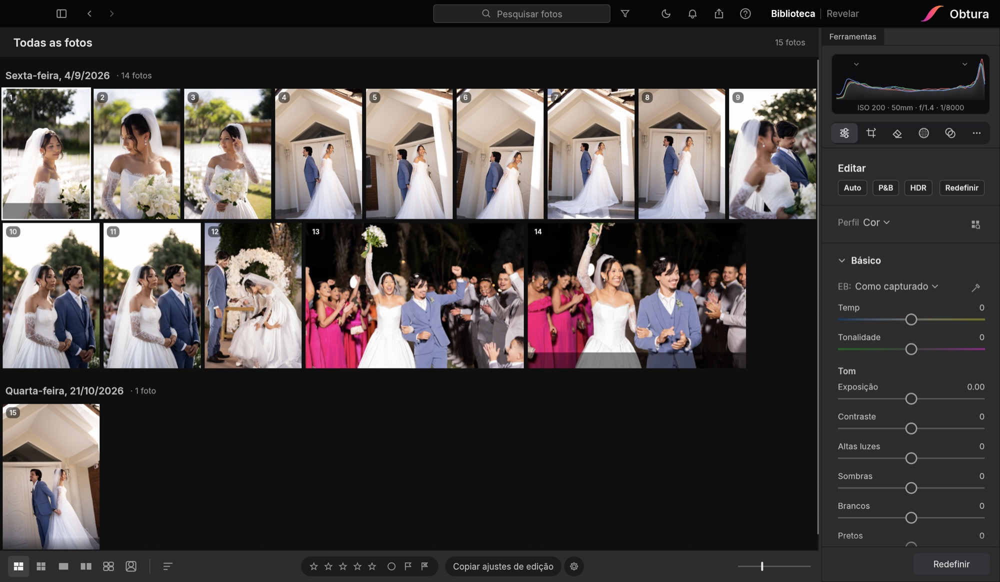
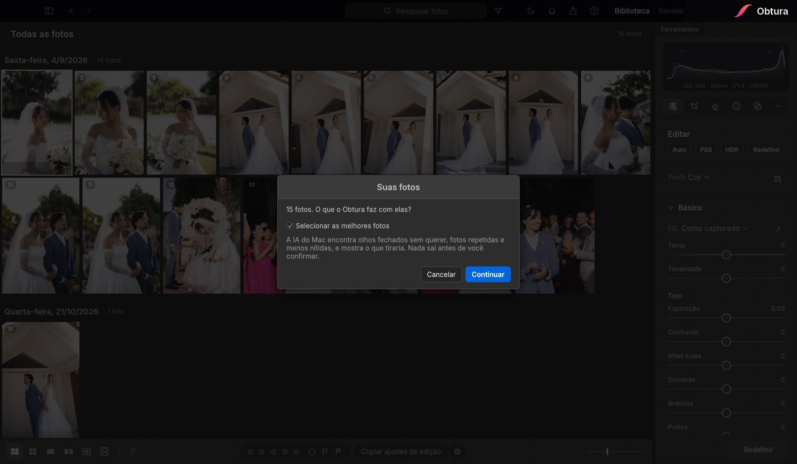
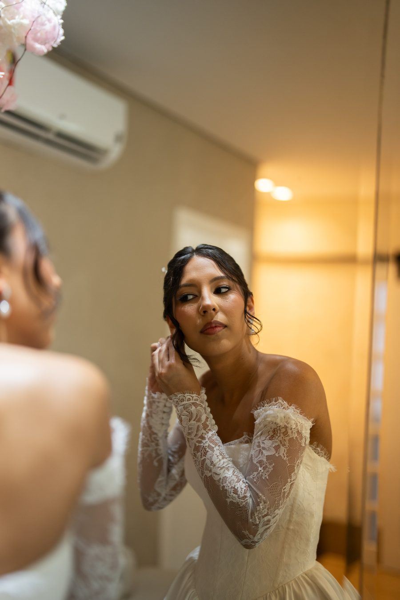
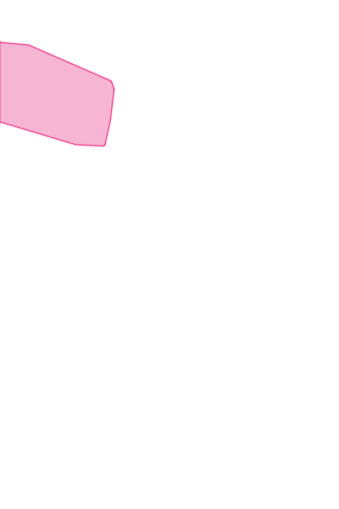
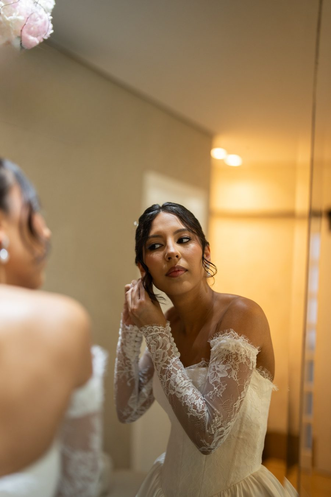
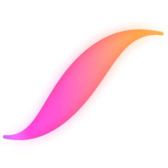

O editor que escolhe as melhores fotos do casamento e apaga o que atrapalha. Menos noites editando.

Acha olhos fechados sem querer, fotos repetidas e desfocadas. Ele separa, você decide. Nada sai sem o seu ok.
Clique no objeto ou pinte por cima: câmera, tomada, placa, gente no fundo. A IA recorta e preenche.
Revelação completa com cor de verdade: temperatura, exposição, contraste, perfis de câmera e muito mais.
Tudo no seu computador. Suas fotos não sobem para nenhum servidor e você edita sem internet.

O ar-condicionado atrás da noiva? Um clique e a IA apaga e refaz a parede. Role e veja.



ANTESDEPOIS
14 dias para usar tudo, sem cartão de crédito. Crie sua conta no próprio app.
O Obtura é para computador: baixe no seu Mac ou PC.
Depois do teste: R$ 29,90/mês ou R$ 299/ano (2 meses grátis). Pix ou cartão.